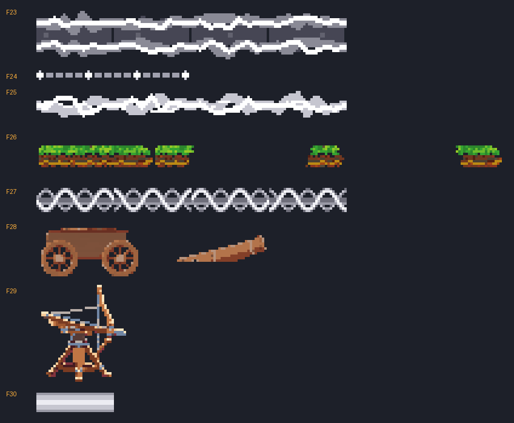

VFX 남은 벡터 채우기 결과
코드만 바꿈 14건 + 새 시트 8장 F23~F30 (무료 워크벤치 5 + ComfyUI 시안 3, 유료 0회). 스펙: docs/specs/skill-vfx.md "남은 벡터 채우기 계획".
수용 기준
- ✅ 고친 점검 도구로 12개 스킬 × 4단계 VFX 벡터 프레임당 3 이하 (아래 3번 표)
- ✅ 태양 관통·차원 붕괴 명중에 기본 검흔(slashMarkFx)이 안 그려진다 (fx.marks 비움)
- ✅ 새 시트 8장 둘레 어두운 비율 0.00~0.01 · 벗겨짐 0% · 부스러기 0 (dev/vfx7/measure.py)
- ✅ 다른 계열 E 시트를 빌려 쓰지 않음 (E25 저격수→신궁, E28·P5 마궁수·차원궁사→차원 붕괴, E21 할버디어→천붕만)
- ✅ 50종 × 4단계 시전 예외 0 · 안 그려진 시트 0
- ✅ 유료 호출 0회 (상한 23)
- ⬜ 전후 캡처 — 사용자 확인 (이 페이지)
1. 전후 나란히 보기
스킬을 고르면 왼쪽(main 0.24.6)과 오른쪽(작업 후) 시험장이 같은 스킬·단계로 열린다. 각 화면 아래 버튼으로 다시 쓰기·일시정지·한 프레임씩 넘기기.
작업 전 (main 0.24.6)
작업 후 (spec-vfx7)
2. 새 시트 8장 (4배 확대)

F23 공허 찢김 띠 · F24 별자리 점선 · F25 하늘 금 띠 (워크벤치) · F26 땅 판 + 조각 3 (ComfyUI) · F27 드릴 나선 (워크벤치) · F28 공성포 차대·포신 · F29 노포 (ComfyUI) · F30 태양 광선 (워크벤치). 회색 시트는 게임에서 직업색으로 다시 칠하고, 흙·나무·쇠가 섞인 F26·F28·F29 는 제 색(raw).
3. 빈 곳 점검 재측정 (dev/review/vfx-gaps-probe.js, 기사 몸·무기 그림 제외)
스킬 × 단계(Lv1·★·★★·★★★)마다 프레임당 VFX 벡터 그리기 수(arc·ellipse·stroke·곡선, lineTo 는 ¼). 기준 3 이하. 평소 화면 60프레임을 빼서 음수가 나올 수 있다 (시전 중에는 평타 고리 등이 안 나와서).
| 스킬 | 작업 전 (main) | 작업 후 | 바뀐 것 |
|---|